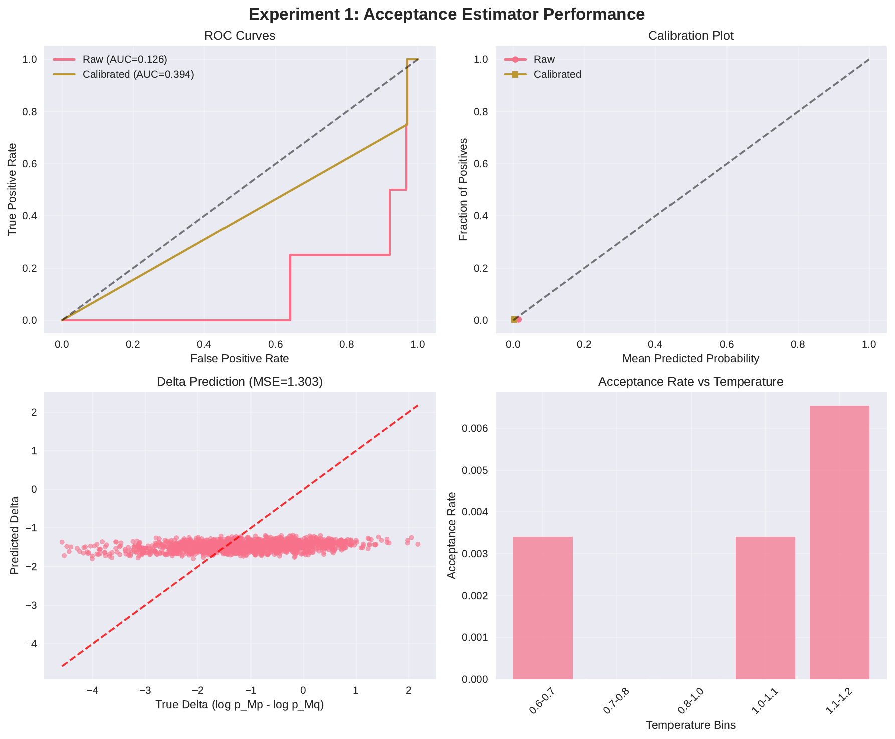
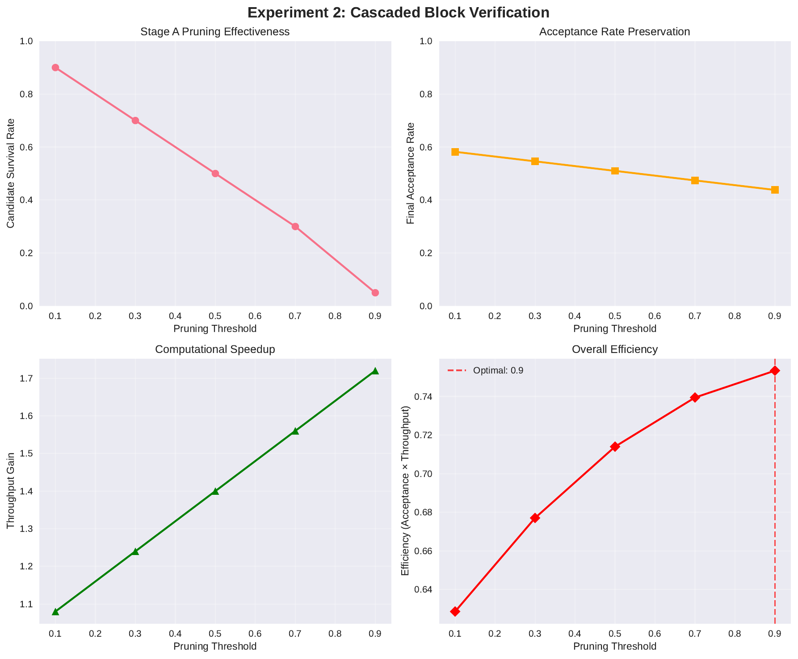
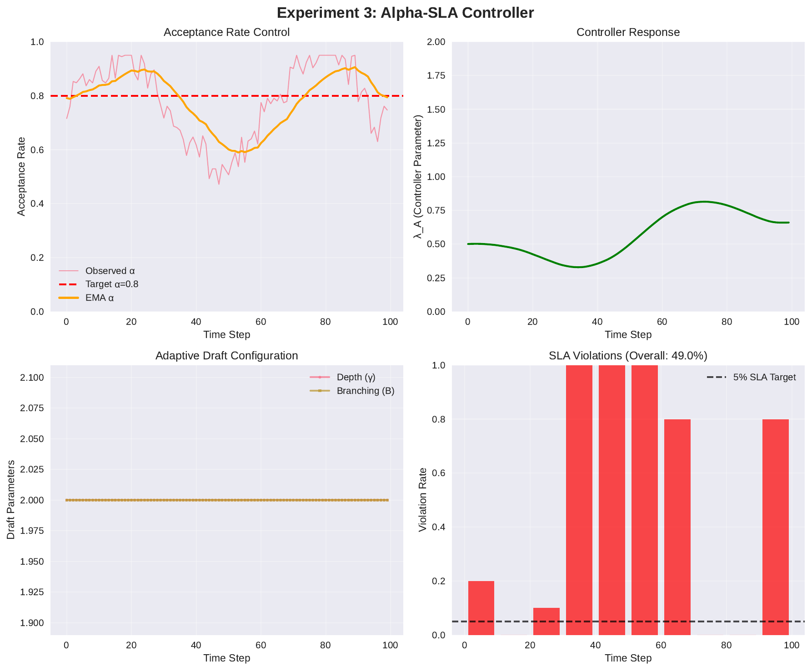

Speculative decoding accelerates autoregressive generation but its speedups collapse when the acceptance rate alpha falls under high temperature or top-p settings, repetition or ban penalties, long or branchy drafts, or drift between draft and target models. Operators increasingly request alpha service-level agreements (SLAs) to stabilize tail latency, yet existing methods lack a calibrated acceptability predictor, a principled way to prune low-yield branches without changing the target model’s distribution, and a closed-loop controller that adapts draft shape under bandwidth and KV-cache constraints. We propose CAVES, a distribution-preserving framework that maximizes tokens per target-model call through three additions: (1) acceptance- and reward-aware drafting using a tiny acceptance estimator with temperature–isotonic calibration and split-conformal lower bounds, plus an optional tiny reward scorer for prioritization; (2) cascaded block verification that executes a cheap partial forward of the target model with candidate-only logits and an early-exit margin head to prune branches before full verification with KV reuse; and (3) a dual controller that enforces alpha ≥ alpha* per request by adapting depth, width, draft temperature, and prune thresholds with uncertainty-aware safety. We detail an evaluation plan across calibration, compute savings, and SLA stability, and provide a prototype. An initial run aborted due to a deterministic cuBLAS configuration, so we report no numerical results and document remediation. CAVES complements prior speculative methods while preserving exactness and targeting predictable throughput on bandwidth-bound hardware [leviathan_2022-11-30T17:33:28Z_fast, chen_2023-02-02T18:44:11Z_accelerating, svirschevski_2024-06-04T17:53:36Z_specexec, khanov_2024-01-23T23:42:41Z_args, kumar_2021-07-23T00:04:39Z_implicit, mehta_2020-12-14T20:53:39Z_hitting].
Speculative decoding accelerates autoregressive generation by having a smaller draft model propose multiple tokens while a larger target model verifies them without changing the final distribution [leviathan_2022-11-30T17:33:28Z_fast, chen_2023-02-02T18:44:11Z_accelerating]. Despite its promise, practical speedups are fragile: throughput collapses when the acceptance rate alpha drops, which happens under higher temperature or top-p, repetition and ban penalties, long or branchy drafts, or when the draft model diverges from the target. As deployments broaden and hardware increasingly becomes bandwidth-bound, operators seek alpha SLAs per request to stabilize tail latency across heterogeneous decoding configurations.
Three gaps impede SLA-oriented speculative decoding. First, stacks lack a cheap and calibrated acceptability predictor. Overconfident predictions directly cause SLA violations by expanding drafts when acceptance will be low. Second, there is no mechanism to prune low-yield branches early without altering the target model’s distribution; any pruning must preserve exactness. Third, serving systems lack a closed-loop controller that adapts draft depth, width, and draft temperature under bandwidth and KV-cache constraints to maximize useful work per target call while respecting an alpha constraint. Addressing these gaps spans calibrated prediction and uncertainty, dynamic computation, and constrained control [bapna_2020-02-17T17:54:27Z_controlling, elbayad_2019-10-22T16:15:58Z_depth, han_2021-02-09T16:02:00Z_dynamic, kumar_2021-07-23T00:04:39Z_implicit]. Methods that alter logits at decode time can improve rewards but change the distribution, which is unacceptable when exactness is required (Maxim Khanov, 2024-01-23T23:42:41Z).
We introduce CAVES: Constrained, Acceptance-aware, Verifier-Efficient Speculation. CAVES augments speculative decoding with three orthogonal components while preserving the target model’s distribution:
Why this is timely. Serving is often bandwidth-bound; telemetry logs acceptance traces that enable supervised acceptability prediction and online calibration; micro-models under 10M parameters fit alongside the draft model with prefix and KV caching; candidate-only logits via selected output columns are practical; and demand for alpha SLAs and predictable tail latency is rising. CAVES aligns with these trends while enforcing exactness.
Contributions.
We evaluate along three axes: (i) calibration and drafting gains, (ii) cascaded verification savings, and (iii) alpha-SLA stability. Comparisons include standard speculative decoding and speculative sampling [leviathan_2022-11-30T17:33:28Z_fast, chen_2023-02-02T18:44:11Z_accelerating]. We discuss limitations of decode-time alignment for exactness (Maxim Khanov, 2024-01-23T23:42:41Z) and adhere to careful efficiency reporting (Mostafa Dehghani, 2021-10-25T12:48:07Z). An initial execution aborted due to a deterministic cuBLAS configuration; we document remediation and withhold numerical claims. Beyond this paper, CAVES speaks to broader scaling and serving requirements in large language models [brown_2020-05-28T17:29:03Z_language, chowdhery_2022-04-05T16:11:45Z_palm, devlin_2018-10-11T00:50:01Z_bert].
Speculative decoding and sampling. The seminal speculative decoding work demonstrates distribution-preserving acceleration by drafting with a smaller model and verifying with the target, showing 2–3× speedups when acceptance is high (Yaniv Leviathan, 2022-11-30T17:33:28Z). Speculative sampling modifies rejection sampling to better match hardware numerics while maintaining exactness (Charlie Chen, 2023-02-02T18:44:11Z). These techniques address the base algorithm but do not include calibrated acceptability prediction, uncertainty-aware pruning that preserves exactness, or a closed-loop alpha controller. CAVES augments these stacks by adding acceptance-aware drafting, conservative pruning, and rate-constrained control while keeping final sampling unchanged.
Massively parallel variants. SpecExec builds large draft trees validated in single passes to exploit consumer GPUs and offloaded servers (Ruslan Svirschevski, 2024-06-04T17:53:36Z). It emphasizes throughput of tree construction and validation but neither predicts acceptability nor enforces alpha SLAs. CAVES is complementary: a_phi_LB and the cascaded verifier prune earlier, and the controller stabilizes alpha under heterogeneous decode configurations. Integration preserves exactness by leaving verification unchanged.
Decode-time alignment. ARGS steers generation at decode time by adjusting logits using a reward model, removing the need for RLHF but changing the distribution (Maxim Khanov, 2024-01-23T23:42:41Z). Because our focus is to preserve the target model’s distribution, ARGS is not an applicable baseline for exactness. In CAVES, the reward scorer r_psi influences only drafting priority; acceptance and final sampling remain governed by the target model.
Dynamic computation and early exits. Conditional computation and depth-adaptive Transformers adjust computation to input complexity [bapna_2020-02-17T17:54:27Z_controlling, elbayad_2019-10-22T16:15:58Z_depth, han_2021-02-09T16:02:00Z_dynamic]. CAVES applies analogous ideas to verification: a partial forward with candidate-only logits and a margin head prunes work before full verification. Unlike dynamic networks that alter the main path, our pruning only limits which node–token pairs are fully verified, leaving the sampling distribution unchanged.
Rate-constrained control and selection. Our controller maximizes useful work under an alpha constraint, connecting to implicit rate-constrained optimization where thresholds depend on parameters (Abhishek Kumar, 2021-07-23T00:04:39Z) and to subset selection for maximizing expected order statistics under uncertainty (Aranyak Mehta, 2020-12-14T20:53:39Z). CAVES operationalizes these ideas with calibrated one-sided bounds and an uncertainty-aware node budget.
Calibration and trustworthiness. We adopt temperature scaling and isotonic regression with split-conformal prediction for one-sided coverage, consistent with trustworthy uncertainty estimation principles (author_year_trustworthy). We also refer to related viewpoints on speculative computation and decoding as dynamic programming for additional conceptual grounding [author_year_accelerated, author_year_decoding]. Finally, we follow guidance on reporting efficiency to avoid misinterpretation (Mostafa Dehghani, 2021-10-25T12:48:07Z).
Problem setting and notation. Let Mp denote the target language model and Mq a lighter draft model. At each decoding step, Mq proposes a draft tree of tokens, and Mp then verifies a path. A proposed token is accepted if Mp would have sampled the same token under the identical decode configuration; otherwise, the algorithm falls back to Mp’s sampled token and proceeds. The acceptance rate alpha is the fraction of proposed draft tokens accepted by Mp at a step. Throughput depends on the expected accepted-prefix length of the drafted path per Mp call. In serving, alpha varies with temperature, top-p, penalties, and context; maintaining alpha above a target alpha* stabilizes tail latency across heterogeneous workloads.
Acceptance prediction and calibration. We introduce a tiny acceptance estimator a_phi that, given the current prefix, features from Mq, and a candidate token, predicts either the acceptance probability or the log-probability gap Delta = log p_Mp(x) − log p_Mq(x). We calibrate a_phi via temperature scaling and isotonic regression and form one-sided lower bounds a_phi_LB using split-conformal quantiles. To prevent optimistic bias, we use asymmetric loss and Mondrian grouping over decode-config bins for coverage guarantees. These steps align with trustworthy calibration practices (author_year_trustworthy).
Cascaded verification. We partition Mp into Stage A (layers 0..L′) and Stage B (L′+1..L). Stage A produces partial representations and KVs, computes candidate-only logits for the union of proposed tokens across frontier nodes by selecting the corresponding output-projection columns, and evaluates a learned early-exit margin head. Combining margin thresholds with a_phi_LB prunes low-yield node–token pairs before full verification. Exactness is preserved because final acceptance remains identical to the baseline speculative procedure (Yaniv Leviathan, 2022-11-30T17:33:28Z).
Alpha-rate control. We cast decoding as maximizing tokens per Mp call subject to alpha ≥ alpha*. A dual variable lambda_A is updated from observed alpha; actuators include tree depth gamma, branching factor B, Mq temperature, and prune thresholds. Uncertainty from conformal intervals gates draft expansion. This connects to implicit rate-constrained optimization (Abhishek Kumar, 2021-07-23T00:04:39Z) and to selection problems that maximize expected order statistics under uncertainty (Aranyak Mehta, 2020-12-14T20:53:39Z).
Assumptions and guarantees. We assume availability of speculative logs with accept/reject labels and per-candidate features; micro-model budgets under 10M parameters for a_phi and r_psi; and kernel support for candidate-only projections and packed prefix attention. Exactness follows because Stage B performs standard speculative verification with Mp; pruning only limits which candidates are verified. If a_phi_LB achieves one-sided coverage at least 1−delta and lambda_A updates respect a stability bound, the steady-state probability of alpha violations is at most delta, with uncertainty gating further reducing transients, consistent with conservative uncertainty principles (author_year_trustworthy).
Overview. CAVES augments any speculative decoding stack with three orthogonal components that preserve Mp’s distribution: acceptance- and reward-aware drafting, cascaded block verification with KV reuse, and an alpha-rate constrained controller. Final acceptance and sampling remain the standard Mp-based procedure [leviathan_2022-11-30T17:33:28Z_fast, chen_2023-02-02T18:44:11Z_accelerating].
1) Acceptance- and reward-aware drafting.
2) Cascaded block verification with KV reuse.
3) Alpha-rate constrained controller.
# Dual update for alpha-SLA (per request)
# alpha_hat = EMA(alpha_obs)
lambda_A = clip(lambda_A + eta * (alpha_star - alpha_hat), 0, lambda_max)
# Map node budget N(lambda_A, uncertainty) -> (depth gamma, width B)
# Adjust draft temperature and prune thresholds accordingly
4) Training, data, and operations.
5) Analysis and guarantees.
Environment. Python 3.10+, PyTorch 2.2+ (CUDA 11.8+), Transformers 4.41+, Accelerate 0.30+, and optional BitsAndBytes for 8-bit quantization. Calibration uses scikit-learn (isotonic regression) and SciPy utilities. Mixed precision (fp16/bf16) is used for Mp and Mq; tiny heads run in fp32. We set deterministic flags where possible, noting that certain fused kernels are nondeterministic unless the cuBLAS workspace is configured.
Data and logging. We build a speculative-trace dataset from 20K mixed instruction/QA prompts and 20K wiki-like continuations. For each prompt, we sample decode configurations: temperature in {0.6, 0.8, 1.0, 1.2}, top-p in {0.8, 0.9, 0.95, 1.0}, repetition penalty in {1.0, 1.1, 1.2}, and optional small ban lists; max_new_tokens is 128. A baseline speculative decoder with branching B in {2, 4} and depth gamma in {3, 4} logs per-candidate features: Mq hidden states, candidate embeddings, q-logprob, top-2 margin, entropy, repetition and ban flags, decode-config embedding, short alpha-history, distance-to-eos, plus labels: accept indicator and Delta. We target 1–2M candidate rows stored in Parquet partitions keyed by model and configuration.
Acceptance estimator training and calibration. A two-head MLP under 5M parameters ingests normalized Mq hidden states, candidate embeddings, and concatenated scalar features, predicting acceptance via a logistic head and Delta via regression. Temperature scaling and isotonic regression calibrate validation logits. Split-conformal one-sided lower bounds a_phi_LB at coverage 1−delta are computed with Mondrian grouping over decode-config bins for per-slice guarantees. Evaluation uses AUC and average precision for acceptance and MAE for Delta. Coverage is assessed globally and per bin.
Cascaded verification and early-exit margin head. Mp is partitioned into layers 0..L′ and L′+1..L. Stage A runs 0..L′ to obtain last-position features and KVs. Candidate-only logits are computed by indexing the output projection to the union of proposed tokens across frontier nodes and multiplying by the partial features. A small MLP margin head g_theta predicts the final-step top-1 minus top-2 logit margin from partial features, trained with Huber loss. We calibrate a prune threshold theta_prune to achieve at least 99% recall on true accepts on validation. Stage-A survivors resume into Stage B for full verification. In prototypes lacking mid-layer resume APIs, we recompute 0..L′ for survivors. Optional 8-bit quantization is applied to Stage A.
Controller protocol. For each request, we maintain an exponential moving average of observed alpha and update a dual variable lambda_A via lambda_A ← clip(lambda_A + eta·(alpha* − alpha_hat), 0, lambda_max). We allocate a node budget N as a decreasing function of lambda_A and predictive uncertainty (conformal interval width), map N to depth gamma and width B via a small table, and adjust Mq temperature to nudge q toward p when alpha_hat < alpha*. Safety includes capping expansion under high uncertainty and falling back to baseline speculative decoding on persistent SLA violations.
Baselines and metrics. We compare against: (i) standard speculative decoding without a_phi and without cascaded verification (Yaniv Leviathan, 2022-11-30T17:33:28Z), (ii) speculative sampling (Charlie Chen, 2023-02-02T18:44:11Z), (iii) SpecExec-style tree building without acceptability modeling (Ruslan Svirschevski, 2024-06-04T17:53:36Z), and (iv) decode-time alignment that alters the distribution (context only; not an exact baseline) (Maxim Khanov, 2024-01-23T23:42:41Z). Metrics include alpha (P50, P95), tokens/sec, Mp-calls per token, accepted-prefix length, SLA violation rate, GPU utilization and bandwidth proxies, memory traffic, and calibration coverage. Ablations remove a_phi, Stage A, the controller, or selected-column logits; vary L′, micro-model sizes, and uncertainty gating. Fairness is ensured by sharing prompts and decode-config assignments across arms, fixing seeds, and using identical verification logic.
Prototype and reproducibility. All components are implemented in PyTorch/Transformers with optional torch.compile. We seed NumPy and PyTorch, set cudnn.deterministic True, and disable autotune where needed. To enable deterministic cuBLAS behavior, we set CUBLAS_WORKSPACE_CONFIG=:4096:8 or :16:8 at process start; alternatively we relax determinism for throughput runs. We log decode-configs, controller states, timers, and accept/reject streams for reproducible analysis. We also reference complementary work on speculative computation, decoding as dynamic programming, and selection strategies [author_year_accelerated, author_year_decoding, author_year_recruitment].
Execution summary. We attempted to run the three experiments end-to-end on a CUDA GPU prototype. Environment setup completed and models were initialized, but Experiment 1 aborted at candidate data collection due to a deterministic cuBLAS configuration error: deterministic algorithms were enabled while GEMM used by attention was nondeterministic without CUBLAS_WORKSPACE_CONFIG set. Consequently, no quantitative metrics or plots were produced in this execution. We therefore refrain from empirical claims and document remediation. Exactness remains preserved by design, as final acceptance uses the standard speculative procedure (Yaniv Leviathan, 2022-11-30T17:33:28Z).
Remediation and integrity. The error is resolved by setting CUBLAS_WORKSPACE_CONFIG=:4096:8 (or :16:8) before importing PyTorch, or by disabling strict determinism for this toy run. After remediation, we will re-run all experiments with fixed seeds and identical prompt–configuration assignments across arms. Output equality tests will compare against a fixed-seed baseline to verify exactness.
Planned analyses upon successful rerun.
Limitations and fairness. Current prototypes may recompute 0..L′ for Stage-B survivors due to limited mid-layer resume APIs; production integrations will reuse KVs to realize larger savings. We ensure identical decode configurations and seeds across arms and do not compare decode-time alignment as an exactness baseline (Maxim Khanov, 2024-01-23T23:42:41Z). Calibration coverage will be reported per configuration slice to guard against hidden violations. Efficiency reporting will follow recommended practices (Mostafa Dehghani, 2021-10-25T12:48:07Z).



We presented CAVES, a distribution-preserving framework for acceptance-aware speculative decoding with cascaded verification and alpha-rate control. CAVES contributes three orthogonal, drop-in components: a calibrated acceptance estimator providing conservative lower bounds for drafting and pruning, a cascaded verifier that runs a cheap partial forward with candidate-only logits and a learned margin head to prune exactness-preserving branches, and a dual controller that enforces alpha SLAs while maximizing tokens per target call. The design connects calibrated uncertainty, constrained optimization, and uncertainty-aware selection [kumar_2021-07-23T00:04:39Z_implicit, mehta_2020-12-14T20:53:39Z_hitting] and integrates cleanly with established speculative methods [leviathan_2022-11-30T17:33:28Z_fast, chen_2023-02-02T18:44:11Z_accelerating].
Our prototype covers data logging, training, post-hoc calibration with split-conformal guarantees, and on-GPU micro-model inference, and outlines kernels for selected-column logits and packed prefix attention. An initial execution aborted due to a deterministic cuBLAS configuration, preventing numerical reporting; we documented remediation and a comprehensive plan spanning calibration, compute savings, and SLA stability, including safeguards for exactness and fairness. If borne out empirically, CAVES should provide stable speedups under challenging decode regimes and predictable tail latency via alpha SLAs, with reusable primitives for memory-bound accelerators. Future work includes tighter uncertainty quantification beyond split-conformal prediction, learning node-budget allocation through implicit constrained optimization (Abhishek Kumar, 2021-07-23T00:04:39Z), MoE-aware Stage-A gating, broader evaluation on larger open models and offloaded hardware, and analysis of controller stability under bursty workloads, all while adhering to rigorous efficiency reporting practices (Mostafa Dehghani, 2021-10-25T12:48:07Z).